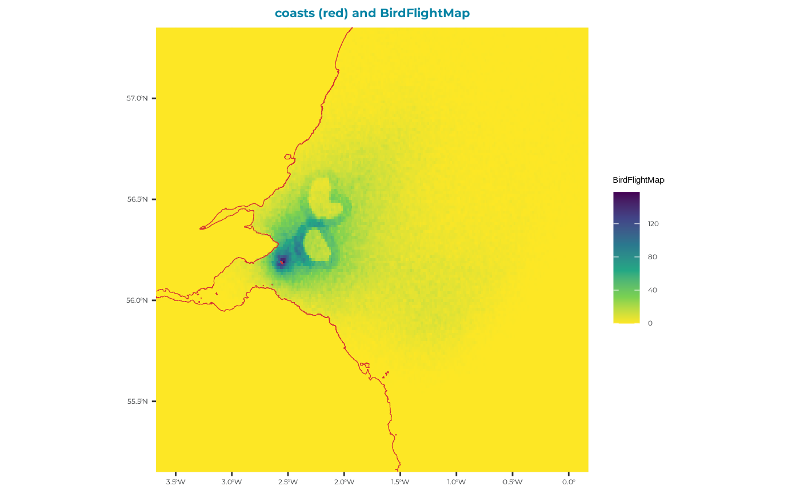
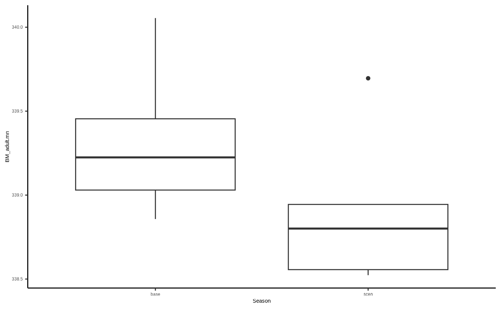
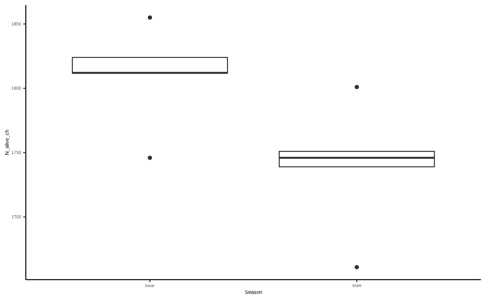
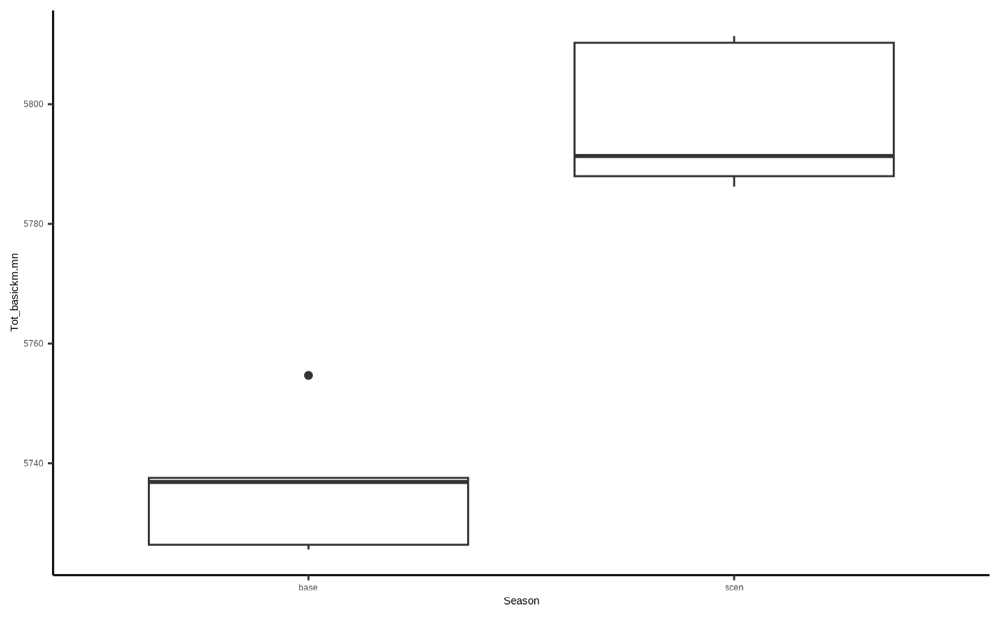

Example kittiwake: step 4 - interpreting the outputs
H_exampleKI_output.RmdLoad the seabORD package
### UK outline
#uk_map <- dplyr::select(
#rnaturalearth::ne_countries(country = "United Kingdom",
#scale = "medium",
#returnclass = "sf"),
#name,
#geometry)
#use coastline
uk_map <- seabORD::cef_coast_4326
### theme definition
sysfonts::font_add_google("Montserrat", "montserrat") # Base and heading font
sysfonts::font_add_google("JetBrains Mono", "jetbrains_mono") # Code font
showtext::showtext_auto()
theme_bslib <- ggplot2::theme(
plot.background = ggplot2::element_rect(fill = "#fff", color = NA), # Background color
panel.background = ggplot2::element_rect(fill = "#EAEFEC", color = NA), # Panel background (secondary)
panel.grid.major = ggplot2::element_line(color = "#EAEFEC"), # Major grid lines
panel.grid.minor = ggplot2::element_line(color = "#EAEFEC"), # Minor grid lines
axis.text = ggplot2::element_text(color = "#292C2F", family = "montserrat"), # Axis text (foreground and font)
axis.title = ggplot2::element_text(color = "#292C2F", family = "montserrat"), # Axis titles
plot.title = ggplot2::element_text(color = "#0483A4", family = "montserrat", size = 16, face = "bold", hjust = 0.5), # Title
legend.background = ggplot2::element_rect(fill = "#fff", color = NA), # Legend background
legend.key = ggplot2::element_rect(fill = "#EAEFEC", color = NA), # Legend key
legend.text = ggplot2::element_text(color = "#292C2F", family = "montserrat"), # Legend text
plot.caption = ggplot2::element_text(color = "#292C2F", family = "jetbrains_mono"),
axis.title.x = ggplot2::element_blank(), # Remove x-axis label
axis.title.y = ggplot2::element_blank(),# Caption for code font
)Output - reading and interpretation
The main output of seabORD is a list, where the different elements relate to respective parts of the model e.g., wind farm effects, adult outputs, chick outputs etc.
We shall start by reading in an example created from a similar (but not identical) run with the same species (kittiwake), colony (Isle of May), and wind farm set up (Neart na Gaoithe and Inch Cape).
Read in example output
sbordout <- seabORD::example_scenario_output
# str(sbordout) # check out the structure
# names(sbordout)As you can see this is an extensive output with 16 elements to the list. The first five elements of the list are related to inputs (“switches”, “Parameters”, “ordPar”, “modPar”, “thisRun”) and we include this information so that the runs will be reproducible and are transparent for anyone inspecting the results.
The following 11 outputs, aside from “BirdFlightMap” are all outputs relating to different components/entities in the model and each element typically has a $data section where the actual data is contained and a $metadata section which describes each of the columns in the output.
“output_f0” - Flight metrics relating to ORD interaction
“output_c0” - Chick metrics e.g., number alive and mean body mass
“output_a0” - Adult metrics e.g., survival and body mass
“output_y0” - Survival metrics relating to calc_pSurvival function which estimates over-winter survival from mass-survival relationships
“BirdFlightMap” - a flight map of locations - note this is just for visual assessment
“output_i0”
“output_i1”
“output_i2”
“output_i3”
“output_i4”
“output_i5”
Plot BirdFlightMap
Let’s plot the flight map location output just to see that the run has performed as intended
# View the birdfligthmap output which is saved to it:
BirdFlightMap <-
terra::rast(sbordout$BirdFlightMap) %>%
terra::project(terra::crs(uk_map))
BirdFlightMap_df <- as.data.frame(BirdFlightMap, xy = TRUE)
ggplot2::ggplot() +
ggplot2:: geom_raster(data = BirdFlightMap_df, ggplot2::aes(x = x, y = y, fill = layer)) +
# Add the reprojected UK boundary
ggplot2::geom_sf(data = uk_map, fill = NA, color = "#D63333", size = 1.5) +
# Customize the plot
theme_bslib + #palette theme
ggplot2::scale_fill_viridis_c(
na.value = "gray", # Set the color for NA (i.e., for 0 values)
name = "BirdFlightMap", direction = -1) +
ggplot2::labs(fill = "BirdFlightMap locations",
title = "coasts (red) and BirdFlightMap")+
# Crop the map to the Firth of Forth and a bit of the North Sea
ggplot2::coord_sf(
xlim = c(-3.5, 0), # Longitude range (adjust as needed)
ylim = c(55.25, 57.25) # Latitude range (adjust as needed)
)
From this plot we can see clearly the two ORD footprints, with a higher density of foraging location in the 5km displacement zone surrounding each ORD. Some birds have foraging inside the ORD footprints - these will have been indiviudals which were not assigned as displacement susceptible.
Adult output (output_a0)
# inspect adult metric descriptions
sbordout$output_a0$metadata
#> # A tibble: 25 × 3
#> VarName VarDescription VarUnits
#> <chr> <chr> <chr>
#> 1 Rep Replicate run number ""
#> 2 Prey Median prey available "g/area"
#> 3 Season Season type, baseline or scenario ""
#> 4 t Time step ""
#> 5 N_alive_ad Number of live adult birds in group ""
#> 6 N_dead_ad Number of dead adult birds in group ""
#> 7 BM_adult_t0.mn Initial adult bird body mass, mean "g"
#> 8 BM_adult_t0.sd Initial adult bird body mass, standard deviation "g"
#> 9 BM_adult.mn Adult body mass (live birds only), mean "g"
#> 10 BM_adult.sd Adult body mass (live birds only), standard deviation "g"
#> # ℹ 15 more rows
# Isolate the adult output:
adults <- sbordout$output_a0$data
# Inspect the dataframe in a new page:
#View(adults)You will see that there are 4 replicates of prey values here with respective rows for baseline (“Season$base”) and scenario (“Season$scen”) matched runs, giving a total of 8 rows.
Conceivably, the average condition of adults across scenario runs at the end of the simulation (BM_adult.mn), will be lower than that for baseline runs. So let’s plot that and have a look…
ggplot2::ggplot()+
ggplot2::geom_boxplot(data=adults, aes(x=Season, y=BM_adult.mn)) +
ggplot2::theme_classic()
Chick output (output_c0)
# inspect adult metric descriptions
sbordout$output_c0$metadata
#> # A tibble: 18 × 3
#> VarName VarDescription VarUnits
#> <chr> <chr> <chr>
#> 1 Rep Replicate run number ""
#> 2 Prey Median prey available "g/area"
#> 3 Season Season type, baseline or scenario ""
#> 4 t Time step ""
#> 5 N_alive_ch Number of live chicks in group ""
#> 6 N_dead_ch Number of chicks in group ""
#> 7 BM_chick.mn Chick body mass, mean "g"
#> 8 BM_chick.sd Chick body mass, standard deviation "g"
#> 9 BM_condition.mn Chick body condition, mean ""
#> 10 BM_condition.sd Chick body condition, standard deviation ""
#> 11 CoD.none Cause of death: none, chick is alive ""
#> 12 CoD.killed Cause of death: killed (predated) ""
#> 13 CoD.starved Cause of death: body mass too low ""
#> 14 CoD.unattended Cause of death: parents absent ""
#> 15 CoD.parentdead Cause of death: at least one parent dead ""
#> 16 CoD.abandoned Cause of death: abandoned by parents ""
#> 17 CoD.other Cause of death: other mishap (e.g. flooding) ""
#> 18 ChicksPerNest Mean number of chicks per nest surviving ""
# Isolate the adult output:
chicks <- sbordout$output_c0$data
# Inspect the dataframe in a new page:
#View(chicks)Conceivably, the number of survivy chicks across scenario runs at the end of the simulation (N_alive_ch), will be lower than that for baseline runs…
ggplot2::ggplot()+
ggplot2::geom_boxplot(data=chicks, aes(x=Season, y=N_alive_ch)) +
ggplot2::theme_classic()
Flight related output (output_f0)
# inspect adult metric descriptions
sbordout$output_f0$metadata
#> # A tibble: 20 × 3
#> VarName VarDescription VarUnits
#> <chr> <chr> <chr>
#> 1 Rep Replicate run number ""
#> 2 Season Season type, baseline or scenario ""
#> 3 TotN_C_risk.mn Number of 'days' where there was a collision risk, m… ""
#> 4 TotN_C_risk.sd Number of 'days' where there was a collision risk, sd ""
#> 5 TotN_None.mn Number of 'days' where there was no ORD interaction,… ""
#> 6 TotN_None.sd Number of 'days' where there was no ORD interaction,… ""
#> 7 TotN_D_only.mn Number of 'days' where there was displacement only, … ""
#> 8 TotN_D_only.sd Number of 'days' where there was displacement only, … ""
#> 9 TotN_B_only.mn Number of 'days' where there was a barrier effect on… ""
#> 10 TotN_B_only.sd Number of 'days' where there was a barrier effect on… ""
#> 11 TotN_BD.mn Number of 'days' where there was a barrier and displ… ""
#> 12 TotN_BD.sd Number of 'days' where there was a barrier and displ… ""
#> 13 TotN_trips.mn Total number of flights taken per day, mean ""
#> 14 TotN_trips.sd Total number of flights taken, sd ""
#> 15 Tot_basickm.mn Distance flown without ORD present, mean ""
#> 16 Tot_basickm.sd Distance flown without ORD present, sd ""
#> 17 Tot_extrakm.mn Extra distance flown because of ORDs, mean ""
#> 18 Tot_extrakm.sd Extra distance flown because of ORDs, sd ""
#> 19 DispGT0.sm Birds displaced at least once ""
#> 20 BarrGT0.sm Birds encountered a barrier at least once ""
# Isolate the adult output:
flights <- sbordout$output_f0$data
# Inspect the dataframe in a new page:
#View(flights)“Tot_basickm.mn” is the mean per replicate of how many km birds flew - which would conceivably be higher for scenario runs due to barrier effects increasing flight distance, so let’s do another basic plot:
ggplot2::ggplot()+
ggplot2::geom_boxplot(data=flights, aes(x=Season, y=Tot_basickm.mn)) +
ggplot2::theme_classic()
# and we can see that adults in the scenario run typically flew around 50km more on average over the simulation duration than birds with no wind farm interaction.Outputs relating to impacts (i0…5)
Metric: Additional Mortality 1-i1: TRUE means birds never directly impacted
Metric: Additional Mortality 1-i2: TRUE means birds directly impacted in some way at least once
Metric: Additional Mortality 1-i3: TRUE means birds displaced at least once, never barriered
Metric: Additional Mortality 1-i4: TRUE means birds barriered at least once, never displaced
Metric: Additional Mortality 1-i5: TRUE means birds barriered and displaced at least once
Metric: Additional Mortality 1-i6: All impacts grouped separately